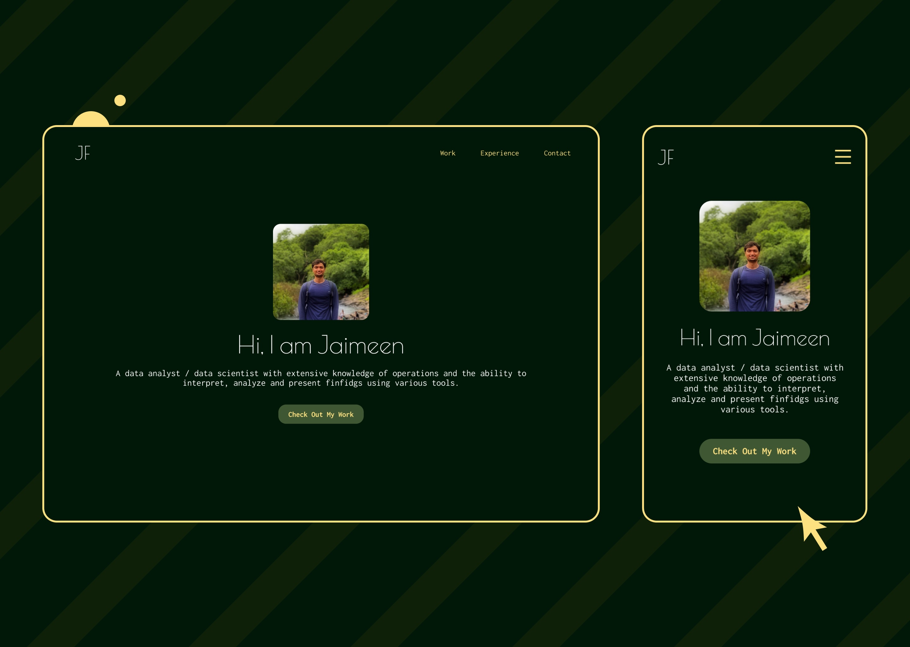
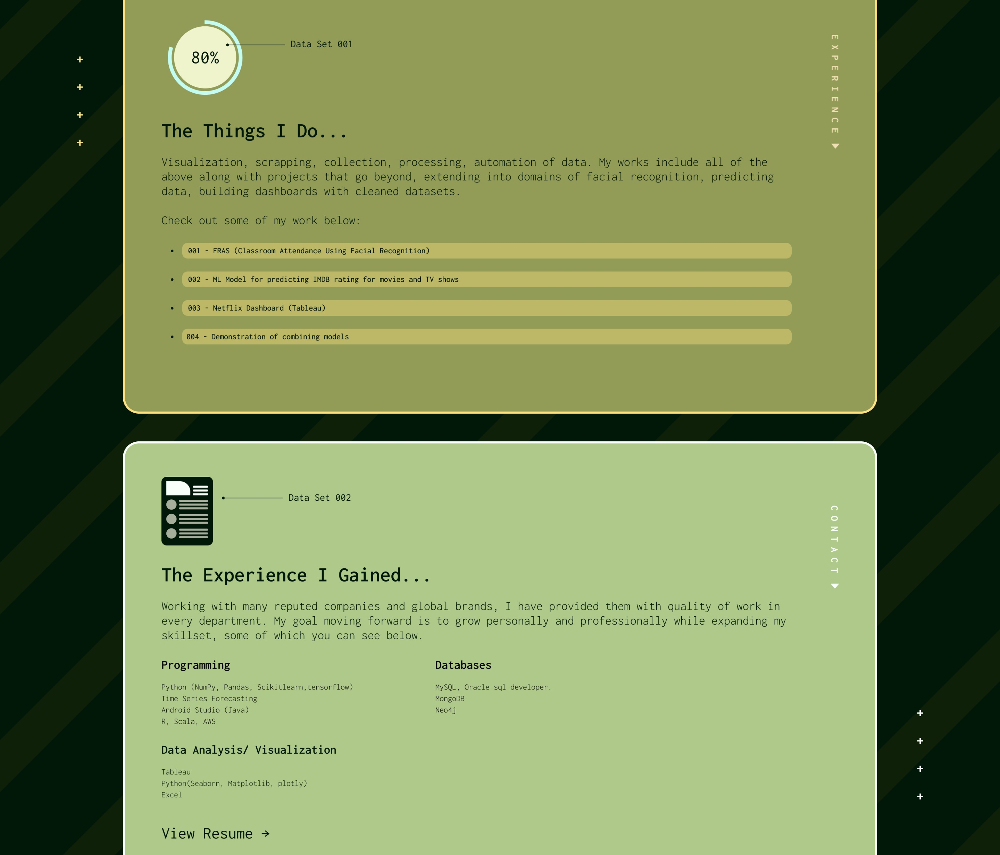
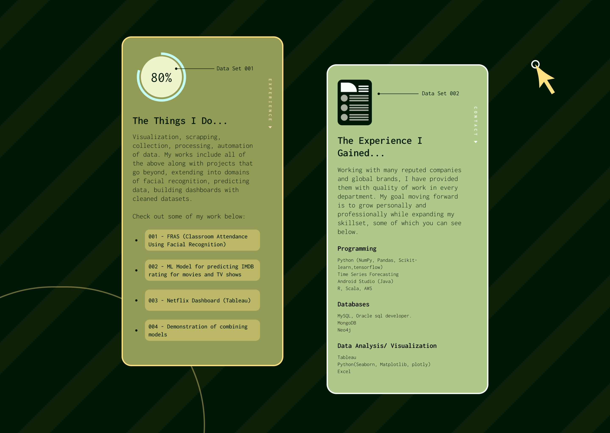

Jaimeen Fumakiya
Portfolio Website (2022)
→ Synopsis ←
Jaimeen Fumakiya is a data scientist with a portfolio of various data related projects that are too many to display in a traditional resume. Hence, a simple yet effective website to showcase his work was needed.
Due to Jaimeen's coding abilities, he had initially only asked me to design the website, while deployment would be handled by him. However, tempted by curiosity and the chance to update my skill-set, I decided to try my hand at using Webflow for this project.
This, in effect, would not only handle deployment of the website but also develop my skills as an all around, multi-tool designer. (Besides, Webflow seemed a lot of fun to try out.)

→ Thought Process ←
Two words - "Concept Identity".
I wanted to create something that would showcase Jaimeen's identity as a data scientist,
this directed my selection for the font (Inconsolata) which would reflect that aesthetic along with using data terminologies such as "Data Set 001" to highlight the illustrations.
I also wanted to keep the entire content on a single page divided between individual sections. My main reason for doing this was to take away all the distractions, so that the user can solely focus on Jaimeen's portfolio and skills. Different pages would also ruin the aesthetic illusion that I was trying to create.
Last, but not the least, I wanted to try out animations, which can be a bit tricky for a new Webflow user, but thankfully I got the hang of it pretty quickly. I wanted the animations to be quick, clean and distraction free, making sure that they only played once and didn't grab the user's attention more than needed.

→ Challenges ←
This was my first Webflow project, everything about it initially was a challenge. I was learning a new program while trying to make sure that I didn't have to compromise my vision due to my lack of experience.
→ The Solution ←
"Practice & Patience" - the two solutions that countered my lack of knowledge with Webflow. With time, I soon became more comfortable with the program, and it got a lot more easier to realize the vision for the website. The deadline for the project was flexible to allow me enough breathing room to do the same.

Visit Jaimeen Fumakiya's Website →